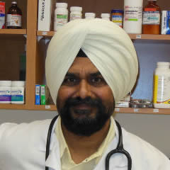
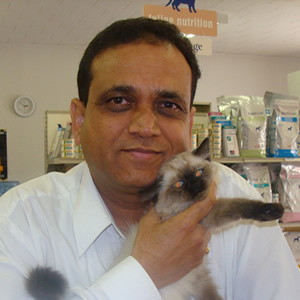

Dr. Gursewak Singh Grewal

Dr. Singh's love for animals started as a little boy on a farm, where he cared for many different types of animals at the farm. He got his DVM degree from Punjab Agricultural University, College of Veterinary Science, Ludhiana, India in 1982 and Master's Degree in Veterinary Pathology in 1997. He started his career as a mixed animal practitioner which he continued for 24 years before moving to Canada.
Dr. Singh became member of College of Veterinarians of Ontario in 2007 and started his career in Canada as a small animal veterinarian. He has special passion for surgeries and preventive medicine. Dr. Singh established Bayview Park Animal Hospital in July 2012 jointly with Dr. Jindal.
Dr. Singh is a father and husband and loves gardening and long walks.
Dr. Kuldip Jindal

Dr. Jindal got DVM degree in 1984 and stared career as a veterinarian immediately after. He is member of College of Veterinarians of Ontario and British Columbia Veterinary Medical Association. He worked at many small animal clinics before the idea of opening his own clinic struck his mind. His dream came true when he opened Bayview Park Animal Hospital in partnership with Dr. Singh.
Dr. Jindal has special interest in internal medicine, dentistry and dermatology. In his spare time, Dr. Jindal loves to play badminton.